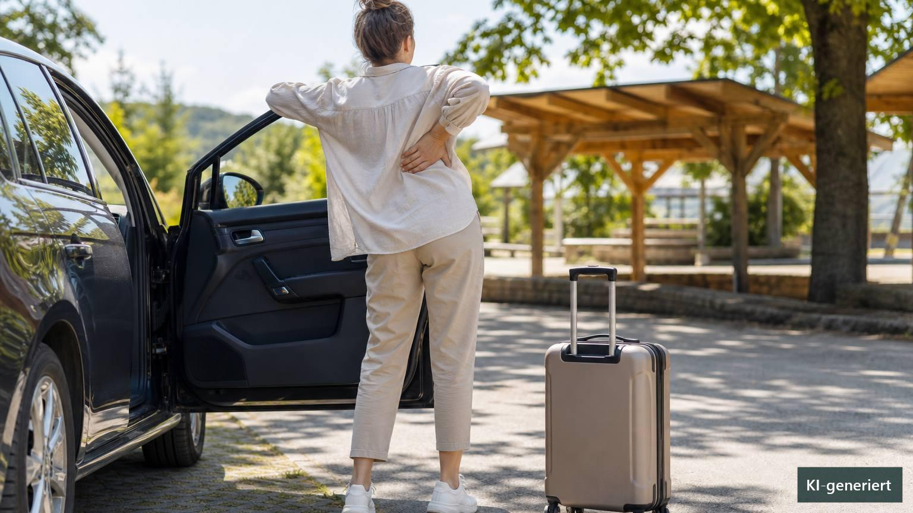

Sommerreisen | Erwachsene und ältere Menschen
Rückenfreundlich reisen: Beweglich statt perfekt sitzen
Eine lange Autofahrt, mehrere Stunden im Zug oder ein enger Flugzeugsitz können den Rücken spürbar fordern. Häufig sind nicht einzelne „falsche“ Bewegungen entscheidend, sondern eine Mischung aus ungewohnt langem Sitzen, wenig Bewegungsfreiheit, Anspannung, Vorerkrankungen und schwerem Gepäck. Rückenschmerz bedeutet dabei nicht automatisch, dass etwas beschädigt wurde. Unspezifische Beschwerden haben meist keine eindeutig feststellbare Einzelursache. Sinnvoller als die Suche nach einer perfekten Haltung ist deshalb ein anpassbarer Reiseplan: Positionen wechseln, Bewegung sicher ermöglichen, Belastungen dosieren und Warnzeichen ernst nehmen. ([gesundheitsinformation.de](https://www.gesundheitsinformation.de/ruecken-und-kreuzschmerzen.html))

Warum langes Reisen Beschwerden verstärken kann
Beim Reisen bleibt der Körper oft länger in derselben Position als im normalen Alltag. Eine systematische Übersicht longitudinaler Studien fand zwar keinen eindeutigen Zusammenhang zwischen der gesamten täglichen Sitzdauer und dem erstmaligen Auftreten von Kreuzschmerz. Längeres sitzendes Verhalten konnte jedoch mit stärkerer schmerzbezogener Einschränkung verbunden sein. Die Aussagekraft war begrenzt, unter anderem weil die Sitzzeiten meist nur erfragt und nicht objektiv gemessen wurden. Daraus lässt sich kein minutengenauer Grenzwert ableiten. ([pmc.ncbi.nlm.nih.gov](https://pmc.ncbi.nlm.nih.gov/articles/PMC8983064/?utm_source=openai))
Für konkrete Reisebeschwerden ist die Datenlage noch dünner. Studien zu Büroarbeit oder allgemeinem Sitzen beantworten nicht zuverlässig, welche Sitzposition im Auto, Zug oder Flugzeug für eine bestimmte Person am besten ist. Hinzu kommen Vibrationen, eingeschränkte Beinfreiheit, ungewohnte Sitze und das Heben von Gepäck. Deshalb sind starre Regeln wie „immer exakt aufrecht sitzen“ oder „alle 30 Minuten aufstehen“ wissenschaftlich nicht ausreichend begründet.
Sitzen ohne starre Idealhaltung
Eine einzelne Haltung lässt sich nicht allgemein als gesund oder schädlich festlegen. Übersichtsarbeiten berichten widersprüchliche Zusammenhänge zwischen Wirbelsäulenhaltung, körperlicher Belastung und Rückenschmerz. Beobachtete Zusammenhänge beweisen zudem keine Ursache. Auch die Forschung zur Bewegungsvariabilität zeigt kein einheitliches Muster, das für alle Menschen mit Kreuzschmerz gilt. ([pubmed.ncbi.nlm.nih.gov](https://pubmed.ncbi.nlm.nih.gov/31451200/?utm_source=openai))
Praktisch bedeutet das: Eine Position darf bequem und gut gestützt sein, muss aber nicht dauerhaft gehalten werden. Die Rückenlehne kann so eingestellt werden, dass Lenkrad, Pedale oder Tisch ohne starkes Vorbeugen erreichbar bleiben. Eine kleine, weiche Unterstützung im Bereich des unteren Rückens kann angenehm sein, sollte aber weder Druckschmerz noch ein erzwungenes Hohlkreuz auslösen. Füße beziehungsweise Schuhe sollten möglichst stabil aufstehen; Taschen gehören nicht unter die Füße, wenn dadurch die Knie stark angehoben oder Fluchtwege blockiert werden.
Kleine Veränderungen zählen ebenfalls: das Becken etwas vor- oder zurückbewegen, die Lehnenneigung leicht verändern, Schultern lockern, Füße neu aufsetzen oder – als Mitfahrerin beziehungsweise Mitfahrer – die Beinposition wechseln. Wer selbst fährt, verändert Einstellungen ausschließlich im Stand. Sicherheit und Fahrzeugkontrolle gehen jeder Rückenübung vor.
Positionswechsel und Bewegungspausen sinnvoll einordnen
Bei bestehenden Rückenbeschwerden empfehlen seriöse Gesundheitsinformationen, aktiv zu bleiben und langes unbewegliches Sitzen sowie ausgedehnte Bettruhe zu vermeiden. Das rechtfertigt jedoch kein festes, für alle Menschen gültiges Pausenschema. Reiseart, Verkehrslage, Alter, Mobilität, Beschwerden und Vorerkrankungen unterscheiden sich zu stark. ([nhs.uk](https://www.nhs.uk/conditions/back-pain/?source=post_page---------------------------))
Für den Rücken kann es hilfreich sein, Pausen vorausschauend einzuplanen und zusätzlich auf frühe Zeichen wie zunehmende Steifigkeit, Druckgefühl oder den Wunsch nach einem Positionswechsel zu reagieren. Bei einer sicheren Pause genügen oft wenige Minuten ruhiges Gehen und lockere, schmerzfreie Bewegungen. Kräftiges Dehnen bis in den Schmerz, ruckartige Rotationen oder Übungen auf unsicherem Untergrund sind nicht erforderlich. Ältere Menschen sollten beim Aussteigen zunächst einen stabilen Stand herstellen und bei Schwindel, Gleichgewichtsproblemen oder Gelenkbeschwerden eine Haltemöglichkeit nutzen.
Davon zu unterscheiden ist das Thema Blutgerinnsel: Lange eingeschränkte Beweglichkeit kann bei Reisen das Risiko einer tiefen Venenthrombose erhöhen, besonders bei zusätzlichen Risikofaktoren. Die CDC hält häufiges Gehen und Bewegungen der Wadenmuskulatur bei langen Reisen für plausibel, weist aber auf überwiegend indirekte beziehungsweise niedrig sichere Evidenz hin. Ein Gangplatz kann Bewegung erleichtern. Menschen mit früherer Thrombose, kürzlicher Operation, aktiver Krebserkrankung, deutlicher Mobilitätseinschränkung oder mehreren Risikofaktoren sollten vor einer langen Reise ärztlich klären, ob weitere Maßnahmen nötig sind. Kompressionsstrümpfe oder Medikamente sind keine pauschale Selbsthilfemaßnahme. ([cdc.gov](https://www.cdc.gov/yellow-book/hcp/travel-air-sea/deep-vein-thrombosis-and-pulmonary-embolism.html))
Gepäck bewegen: Last, Abstand und Drehung beachten
Direkte klinische Studien dazu, welche Koffertechnik Reise-Rückenschmerz verhindert, fehlen weitgehend. Hinweise stammen vor allem aus der beruflichen Ergonomie. Dort hängt die körperliche Beanspruchung nicht nur vom Gewicht ab, sondern auch davon, wie weit die Last vom Körper entfernt ist, aus welcher Höhe sie aufgenommen wird, wie häufig gehoben wird, wie gut sie greifbar ist und ob der Oberkörper dabei gedreht wird. ([cdc.gov](https://www.cdc.gov/niosh/ergonomics/about/RNLE.html))
Für Reisende folgt daraus eine risikoarme Strategie: Gepäckmenge vorab reduzieren, schwere Inhalte auf kleinere Taschen verteilen und Rollen statt Tragen bevorzugen. Vor dem Heben sollte klar sein, wo das Gepäck abgestellt wird. Den Koffer möglichst nah heranholen, mit beiden Händen sicher greifen und Füße sowie ganzen Körper in Zielrichtung drehen, anstatt unter Last den Rumpf zu verdrehen. Hohe Ablagen, Kofferräume oder Gepäckfächer sind ungünstig, wenn die Last nur mit ausgestreckten Armen erreicht wird. Dann besser um Hilfe bitten – besonders bei akuten Beschwerden, eingeschränkter Kraft, Osteoporose, Gleichgewichtsproblemen oder nach Operationen. Es gibt kein allgemeingültiges „sicheres Koffergewicht“ für alle Menschen.
Was unterwegs entlasten kann – und wo die Grenzen liegen
Manchen Reisenden hilft Wärme vor oder nach der Fahrt, anderen eine kurze Ruheposition oder sanfte Bewegung. Solche Maßnahmen können als angenehm empfunden werden, sind aber weder ein Nachweis für die Ursache der Beschwerden noch eine Garantie für einen beschwerdefreien Reiseverlauf. Übungen sollten im vertrauten, gut tolerierten Bewegungsbereich bleiben. Neue oder deutlich zunehmende Schmerzen sind kein Anlass, eine Bewegung mit Kraft zu erzwingen.
Osteopathie kann nach individueller Untersuchung als ergänzende Möglichkeit erwogen werden, etwa wenn wiederkehrende Beschwerden, Bewegungsunsicherheit oder Fragen zur Reisevorbereitung bestehen. Für eine spezifische Wirksamkeit bei reisebedingtem Rückenschmerz fehlen jedoch direkte hochwertige Studien. Osteopathische Behandlung ersetzt weder die ärztliche Abklärung neuer neurologischer Symptome noch die Diagnostik nach einem Unfall. Auch Aussagen, eine Behandlung „richte“ die Wirbelsäule dauerhaft aus oder beseitige sicher die Ursache, sind wissenschaftlich nicht angemessen.
Warnzeichen: Nicht einfach weiterreisen
Neue Probleme beim Wasserlassen oder Stuhlgang, Gefühlsverlust im Genital- oder Afterbereich sowie Schmerzen, Taubheit oder Schwäche in beiden Beinen können auf eine seltene, aber dringliche Nervenkompression hindeuten. Ebenso müssen Rückenschmerzen nach einem schweren Unfall sofort medizinisch beurteilt werden. Starke plötzlich einsetzende oder rasch zunehmende Schmerzen, Fieber, Schüttelfrost, ausgeprägtes Krankheitsgefühl, unerklärlicher Gewichtsverlust oder bekannte Krebserkrankungen sind Gründe für eine zeitnahe ärztliche Abklärung. ([nhs.uk](https://www.nhs.uk/conditions/back-pain/?source=post_page---------------------------))
Nach langen Reisen sind außerdem eine neu auftretende einseitige Schwellung, Überwärmung, Rötung oder unerklärliche Druckschmerzen im Bein mögliche Zeichen einer tiefen Venenthrombose. Plötzliche Atemnot, Brustschmerz, Bluthusten, Herzrasen, Benommenheit oder Ohnmacht können zu einer Lungenembolie passen und sind ein medizinischer Notfall. ([cdc.gov](https://www.cdc.gov/yellow-book/hcp/travel-air-sea/deep-vein-thrombosis-and-pulmonary-embolism.html))
Ohne Warnzeichen gilt: Beschwerden, die über mehrere Wochen anhalten, wiederholt zunehmen, den Schlaf deutlich stören oder normale Alltagsaktivitäten verhindern, sollten fachlich untersucht werden. Eine frühere Diagnose, Osteoporose, eine kürzliche Operation oder ausgeprägte Unsicherheit beim Gehen senken bei älteren Menschen die Schwelle für eine ärztliche Rücksprache.
Praktische Tipps für zu Hause
- Reiseunterbrechungen bereits bei der Planung berücksichtigen, ohne daraus ein starres Minutenprogramm zu machen.
- Die Sitzposition gelegentlich in kleinen Schritten verändern; es gibt keine universelle Idealhaltung, die stundenlang festgehalten werden muss.
- Als fahrende Person Einstellungen und Übungen ausschließlich im sicheren Stand verändern beziehungsweise durchführen.
- Bei Pausen wenige Minuten ruhig gehen und nur Bewegungen wählen, die kontrolliert und ohne deutliche Schmerzsteigerung möglich sind.
- Im Sitzen Füße oder Sprunggelenke regelmäßig bewegen, sofern ausreichend Platz besteht und keine ärztlichen Einschränkungen dagegen sprechen.
- Rollkoffer nutzen, Gepäck reduzieren oder auf mehrere leichtere Einheiten verteilen.
- Lasten nah am Körper greifen und mit den Füßen umsetzen, statt den Rumpf unter Gewicht zu verdrehen.
- Bei hohen Ablagen, schwerem Gepäck, Gleichgewichtsproblemen oder akuten Beschwerden frühzeitig um Hilfe bitten.
- Bei erhöhtem Thromboserisiko vor längeren Reisen individuelle ärztliche Beratung einholen; Medikamente und Kompressionsstrümpfe nicht pauschal selbst beginnen.
Wann medizinische Hilfe wichtig ist
- Neue Schwierigkeiten, Urin oder Stuhl zu halten oder die Blase zu entleeren.
- Neue Taubheit im Bereich von Genitalien, After, Gesäß oder Innenseiten der Oberschenkel.
- Neue, rasch zunehmende Schwäche, Taubheit oder Schmerzen in beiden Beinen beziehungsweise plötzlich unsicheres Gehen.
- Rückenschmerz nach einem schweren Sturz, Verkehrsunfall oder anderen bedeutenden Trauma.
- Starke plötzlich einsetzende oder rasch zunehmende Schmerzen, Fieber, Schüttelfrost oder ausgeprägtes Krankheitsgefühl.
- Unerklärlicher Gewichtsverlust, bekannte Krebserkrankung oder anhaltender nächtlicher Schmerz.
- Neue einseitige Beinschwellung, Überwärmung, Rötung oder unerklärliche Wadenschmerzen nach längerer Reise.
- Plötzliche Atemnot, Brustschmerz, Bluthusten, Herzrasen, Benommenheit oder Ohnmacht: sofortige Notfallhilfe.